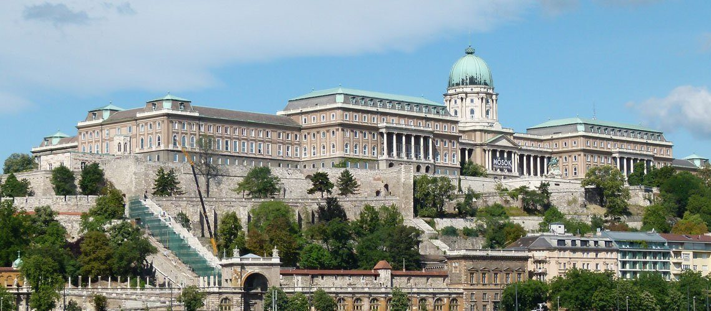
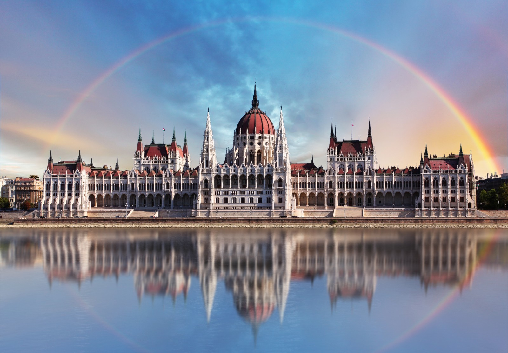
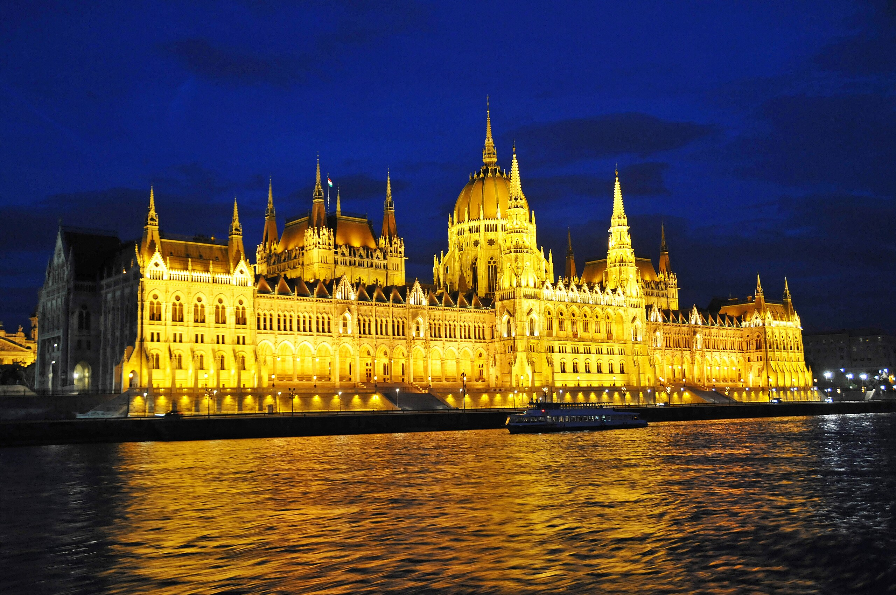
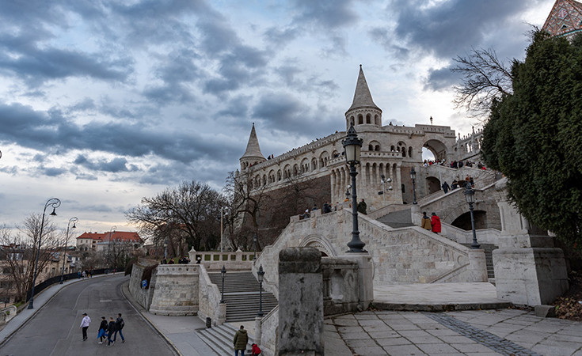
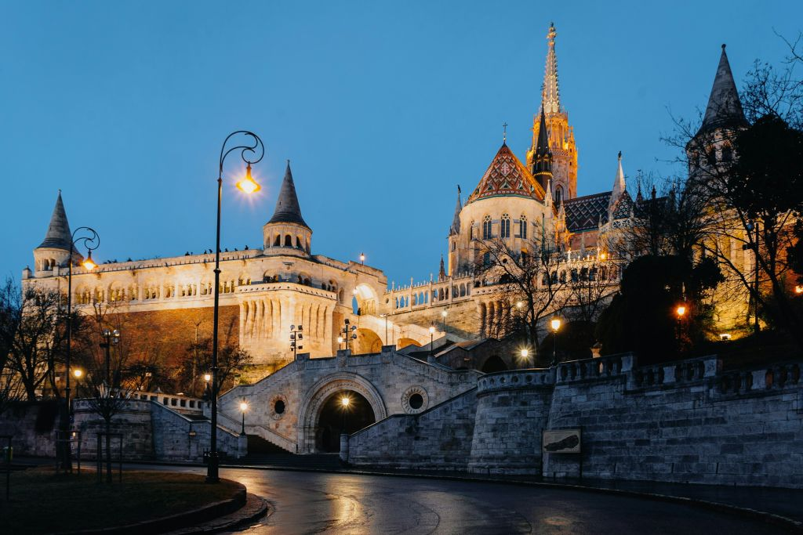
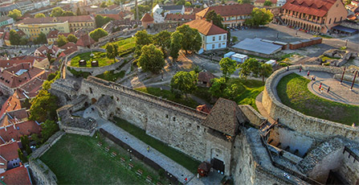
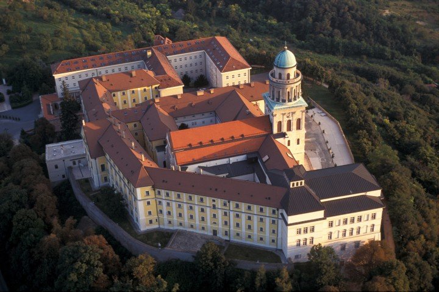
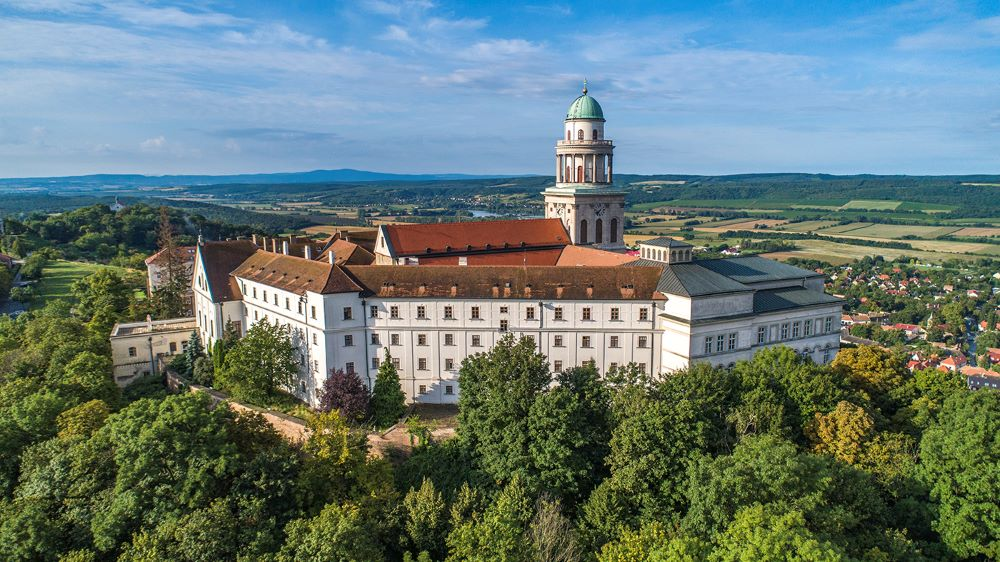

Buda Castle, Budapest


Buda Castle, perched majestically atop Castle Hill, crowns the skyline of Budapest with centuries of history and grandeur.
Its sprawling courtyards, ornate façades, and panoramic views of the Danube and Pest below invite visitors to step into a world of
royal splendor. Wander through museums, stroll along the cobblestone terraces, and let the whispers of kings, queens, and ancient
walls tell their tales. A symbol of Hungary’s rich heritage, Buda Castle is not just a landmark—it’s an experience of elegance,
history, and the timeless charm of Budapest.
Best time to visit:
Early morning for fewer crowds, or late afternoon for sunset views over the Danube.
Opening hours:
Daily, typically 10:00–18:00 (hours can vary seasonally).
Entry:
Castle grounds are free to explore; museums inside (Hungarian National Gallery, Budapest History Museum) require tickets (€10–€15 each).
SEE MAP
Hungarian Parliament Building, Budapest


The Hungarian Parliament Building in Budapest rises majestically along the Danube, a stunning testament to neo-Gothic grandeur and
national pride. Its intricate spires, ornate façades, and glittering dome capture the imagination, while inside, halls adorned with
historic treasures reveal the heartbeat of Hungary’s democracy. Walk along its riverside promenade, marvel at the reflections on the
water, and feel the echoes of history in every stone. More than just a building, it’s a symbol of Hungary’s culture, resilience, and
architectural brilliance—a must-see for every traveler.
Best time to visit:
Morning to early afternoon for guided tours and optimal lighting for photos.
Opening hours:
Daily, usually 8:00–18:00 for tours (check official schedule).
Entry:
Ticket required for guided tours (€8–€25 depending on age and type of tour).
SEE MAP
Fisherman’s Bastion, Budapest


The Fisherman’s Bastion in Budapest is a fairy-tale terrace perched high above the Danube, offering panoramic views of the city’s
skyline, the Parliament, and the iconic Chain Bridge. With its neo-Romanesque turrets, winding staircases, and elegant arches, every
corner feels like stepping into a storybook. As the sun sets, the golden light casts a magical glow over Budapest, making it a perfect
spot for unforgettable photos and quiet reflection. A place where history, legend, and breathtaking vistas come together, the Bastion
is a must-visit for any traveler seeking both beauty and charm.
Best time to visit:
Early morning or late afternoon for soft light and panoramic views of the city.
Opening hours:
Daily, 24/7 for the terraces; access to towers may vary (usually 9:00–23:00).
Entry:
Terraces are free; small fee (~€3) for the upper lookout towers.
SEE MAP
St. Stephen’s Basilica, Budapest
St. Stephen’s Basilica in Budapest stands as a magnificent symbol of faith, history, and architectural grandeur. Its soaring dome
dominates the city skyline, while inside, intricate mosaics, marble columns, and sacred relics inspire awe and reverence. Climb to
the panoramic observation deck for sweeping views of Budapest, where the Danube sparkles and the city’s historic streets unfold below.
Whether admiring its artistic details, attending a majestic organ concert, or simply soaking in the serene atmosphere, St. Stephen’s
Basilica offers visitors a blend of spiritual wonder and timeless beauty—a.
Best time to visit:
Morning or late afternoon for pleasant lighting and fewer crowds.
Opening hours:
Daily, 9:00–17:00 (varies seasonally).
Entry:
Free to enter the main hall; small fee (~€5) for the observation deck.
SEE MAP
Eger Castle, Eger


Eger Castle rises proudly above the charming town of Eger, a testament to Hungary’s resilience and storied past. Steeped in history,
its stone walls whisper tales of heroic defenses and legendary battles. Wander through its courtyards, explore the medieval halls, and
imagine the echoes of centuries gone by. From the castle’s vantage points, enjoy sweeping views of Eger’s red-tiled rooftops and
rolling hills. Visiting Eger Castle is more than sightseeing—it’s stepping into a living story of courage, culture, and the enduring
spirit of Hungary.
Best time to visit:
Morning or late afternoon to avoid crowds and enjoy cooler temperatures.
Opening hours:
Daily, usually 9:00–17:00 (varies seasonally).
Entry:
Entrance fee required (approx. €3–€5); some exhibitions may have extra charges.
SEE MAP
Pannonhalma Archabbey


Pannonhalma Archabbey, perched atop a serene hill in western Hungary, is a jewel of spiritual and architectural heritage. Founded over
a thousand years ago, this Benedictine monastery weaves together history, faith, and culture in every stone. Stroll through its
tranquil courtyards, admire the centuries-old library, and feel the calm of the surrounding vineyards and forests. From its elevated
position, the abbey offers sweeping views of the Pannonian landscape.
Best time to visit:
Morning or late afternoon for calmer atmosphere and softer light.
Opening hours:
Daily, typically 9:00–17:00 (longer in summer); guided tours at scheduled times.
Entry:
Entrance fee applies for abbey buildings and museum (€5–€10); gardens are usually free.
SEE MAP